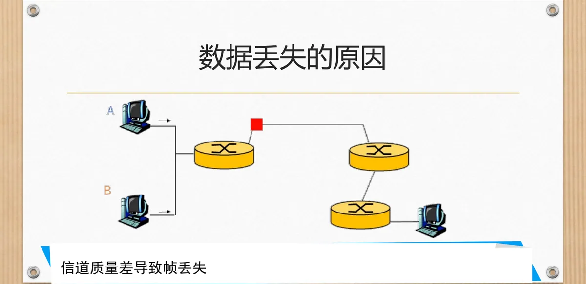
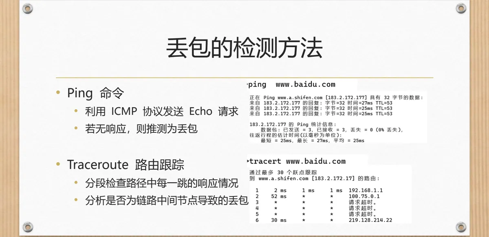
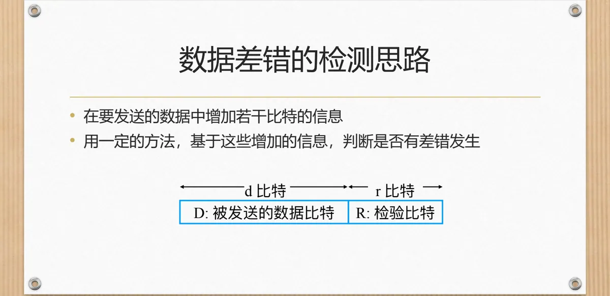
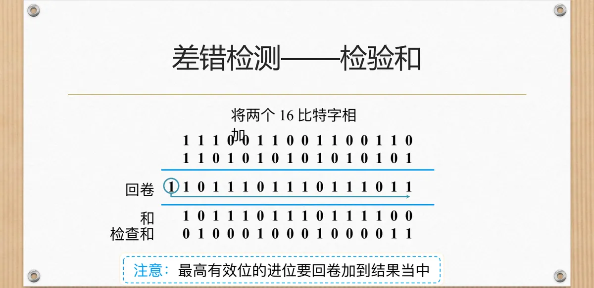
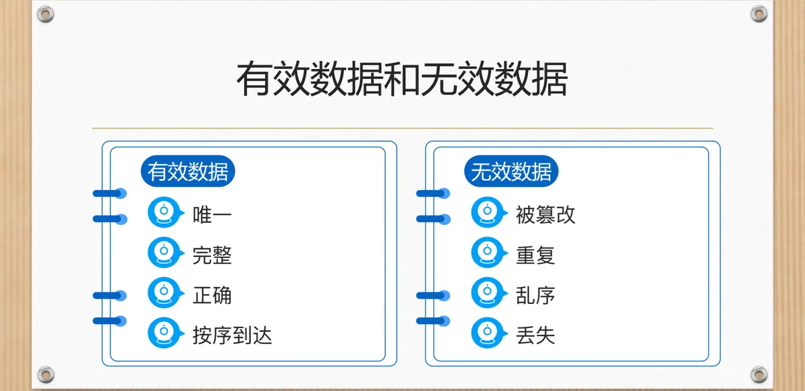

计算机通信与网络 · 第二版讲义 · 第 2 章 网络中的数据通信
2.3 数据可靠传输的基本需求
数据在信道上传输，理想的结果是发送方发什么、接收方就收到什么。真实网络做不到：分组可能丢在半路、可能带着比特错误到达、可能不按发送顺序到达，甚至可能被重复送到。本节先看这四类异常的成因与检测手段，再归纳出数据可靠传输必须满足的需求，为 2.4 节设计可靠传输协议立好目标。
1. 传输过程中可能出现的四类异常
课件的定义是：
- 数据丢失——部分分组没有按照预期到达接收方；
- 数据出错——部分分组到达接收方时发生了比特错误；
- 数据乱序——分组没有按照发送顺序依次到达接收方；
- 数据重复——部分分组在传输过程中被传输了多次。
四句话合起来是一个结论：数据传输过程不可靠。2.2 节的编码与调制解决的是「比特怎样变成信号送出去」，并不保证接收端拿到正确的内容；可靠传输要靠上层专门设计的机制来保证，这正是 2.4 节与 2.5 节的题目。
2. 数据丢失：原因与检测手段
丢失最容易发生在链路的中间环节，课件归为两类原因。
- 信道质量差导致帧丢失。2.1 节讲过的导引型介质都受衰减与干扰影响，信号畸变到接收方无法判读时，这一帧就等于丢了；
- 网络拥塞导致路由器缓存溢出。路由器收到分组要先放进缓存队列，队列长度有限，当数据队列已满时，再收到的数据只能丢掉。
课件还提到：报文传输时若路由形成环路，始终无法传送到目标节点，最终也只能丢掉。

Ping 命令利用 ICMP（Internet Control Message Protocol，因特网控制报文协议）发送 Echo 请求，若无响应则推测为丢包；Traceroute 路由跟踪则分段检查路径中每一跳的响应情况，分析是否为链路中间节点导致的丢包。ICMP 报文详见第 5 章 5.4 节。

丢包的严重程度用丢包率衡量，它是单位时间内丢失的数据包数量与发送数据包数量的比值。
3. 数据出错与误码率
第二类异常是分组到了、比特却变了。课件列出三方面原因：模拟信道中的电磁干扰；光纤接头折损、信号衰减；编码/调制错误或硬件故障。后果是应用数据无法解析，内容显示乱码、无法使用。
出错的程度用误码率（Bit Error Rate，BER）衡量，即单位时间内出错的比特数量与总发送比特数量的比值。
4. 数据差错的检测
（1）基本思路：附加检验比特
比特错误必须先被发现，才谈得上纠正或重传。差错检测的做法只有两步：在要发送的数据中增加若干比特的信息，再用一定的方法基于这些信息判断是否有差错发生。课件把增加的信息画成 d 比特与 r 比特：d 比特是被发送的数据 D，r 比特是检验比特 R；接收方按约定方法重算一遍，与 R 比对即可判断对错。

（2）常见的差错检测方法
课件把方法与层次对应起来：链路层是奇偶校验与循环冗余校验码 CRC（Cyclic Redundancy Check），运输层和网络层是检查和（也叫检验和）。
（3）检验和怎样计算
发送方做三件事：把报文段看作是 16 比特字的序列；对报文的所有 16 比特字求和；将求和结果放入报文的校验和字段。接收方计算收到的报文的校验和，检查是否与报文中的校验和相同：不同就检测到错误，相同则没有检测到错误——不过课件特意补了一句「但仍可能存在错误」——特定的错误组合会让两边结果碰巧相同，错误便被漏过。
求和有一个容易忽略的细节：最高有效位的进位要回卷加到结果当中。两个 16 比特字相加可能超出 16 比特，多出来的最高位不能丢掉，而要加回到最低位上。课件的算例是：
| 步骤 | 16 比特结果 |
|---|---|
| 第一个 16 比特字 | 1110 0110 0110 0110 |
| 第二个 16 比特字 | 1101 0101 0101 0101 |
| 逐位相加，最高有效位产生进位 1 | 1011 1011 1011 1011 |
| 把进位回卷加到最低位 | 1011 1011 1011 1100 |
| 取二进制反码，得到检查和 | 0100 0100 0100 0011 |

课件文字说「将求和结果放入校验和字段」，图里的数值更准确：写入字段的是回卷求和结果的二进制反码（回卷结果 1011 1011 1011 1100，末行检查和 0100 0100 0100 0011 即其逐位取反）。
5. 数据乱序与数据重复
（1）数据乱序
原因有三条：多路径传输，同一报文的分组走了不同路径；中间节点转发策略不同，例如负载均衡；重传机制错乱。影响是应用数据重组失败、产生语义错误，课件举的例子是「你好吗」变成「好吗你」。
（2）数据重复
原因有两条：确认 ACK（Acknowledgement）丢失，发送端等不到确认便重复重传；网络重定向缓存错误。影响是接收端记录重复消息。
课件在这两张上都只留了一个「检测？」的提示：单看一个分组无法判断它是否乱序、是否重复，必须借助序号之类的额外信息——这正是 2.4 节可靠传输模型要设计的机制。
6. 有效数据与数据可靠传输的基本需求
把四类异常放在一起看，就有了有效数据与无效数据的界线。

课件的答案只有两组词：无效数据是丢失、乱序、被篡改、重复，有效数据是按序到达、唯一、完整、正确。两组词恰好一一对应——丢失谈不上完整，乱序谈不上按序到达，被篡改谈不上正确，重复谈不上唯一。由此列出数据可靠传输的基本需求，课件把它们分成功能性与性能性两类：
| 类别 | 需求 | 说明 |
|---|---|---|
| 功能性 | 1. 无丢失 | 所有数据都应到达 |
| 功能性 | 2. 无错误 | 到达的数据是原始数据 |
| 功能性 | 3. 按序到达 | 乱序数据要重排 |
| 功能性 | 4. 无重复 | 数据不应重复处理 |
| 性能性 | 5. 高效 | 传输效率高，资源占用少 |
前四条是功能性的，回答「传输能不能用」；第五条是性能性的，回答「传输好不好用」。功能性需求不满足，数据根本不能用；性能性需求不满足，代价又太大，平衡两者正是 2.5 节的优化问题。本节的目标是：正确、完整、唯一、有序、高效地传送数据。
本节小结
- 数据传输过程不可靠，收发两端的内容之间可能出现丢失、出错、乱序、重复四种差距；丢失来自信道质量差、路由器缓存溢出与路由环路；Ping、Traceroute 用于发现与定位丢包，丢包率度量丢失程度；
- 数据出错源于电磁干扰、光纤折损、编码/调制错误或硬件故障，程度用误码率衡量；
- 差错检测的骨架是「附加检验比特 ＋ 按约定方法判断」：d 比特数据 D 配 r 比特检验比特 R；链路层用奇偶校验与 CRC，运输层与网络层用检查和，发送方求和、进位回卷、取反码写入校验和字段，接收方重算比对，相同仍可能漏检；
- 乱序来自多路径、转发策略不同或重传错乱，重复来自 ACK 丢失或缓存错误；两者都要靠序号等信息判断，是 2.4 节协议要解决的问题；
- 有效数据要按序到达、唯一、完整、正确；可靠传输的需求是功能性的无丢失、无错误、按序到达、无重复，加上性能性的高效，目标是正确、完整、唯一、有序、高效地传送数据。